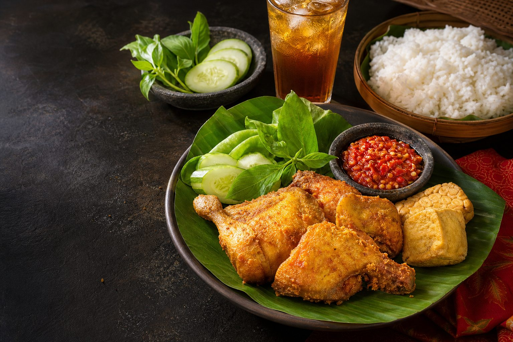

Ayam Gurih dan Fresh
Dimasak dengan bumbu pilihan agar rasanya gurih sampai ke dalam.
Nikmati ayam gurih, sambal nendang, nasi hangat, dan aneka menu favorit dengan harga bersahabat di Ayam Nyungsep Malang.

Karena makan enak nggak harus banyak drama.
Dimasak dengan bumbu pilihan agar rasanya gurih sampai ke dalam.
Pilihan sambal pedas yang bikin suapan berikutnya nggak sabar.
Nasi, ayam, sambal, dan lauk pendamping dalam porsi memuaskan.
Pas untuk pelajar, pekerja, keluarga, dan semua yang lagi lapar.
Ayam Nyungsep adalah warung makan lokal dari Malang yang menghadirkan menu ayam gurih, sambal nikmat, nasi hangat, dan aneka lauk pendamping.
Kami percaya makanan sederhana bisa jadi alasan hari yang biasa berubah istimewa—apalagi kalau sambalnya nggak pelit.
Pesan Ayam Nyungsep sekarang dan rasakan sendiri kenapa banyak orang susah move on.
“Ayamnya gurih, sambalnya mantap, porsinya juga bikin kenyang. Cocok banget buat makan siang.”
“Harganya ramah mahasiswa, tapi rasanya nggak murahan. Sambal bawangnya juara!”
“Sudah beberapa kali pesan dan rasanya tetap konsisten. Paket berduanya pas banget.”
[Masukkan jam operasional]
[Masukkan nomor WhatsApp]
[Masukkan username Instagram]
Kalau jawabannya belum ada, langsung colek kami di WhatsApp.
Ya. Klik tombol WhatsApp di halaman ini untuk memesan.
Hubungi kami untuk mengecek area dan ketersediaan pengantaran.
Bisa. Kabari kami lebih awal agar jumlah dan paketnya bisa disiapkan.
Paket Ayam Komplet dan Ayam Sambal Bawang jadi pilihan banyak pelanggan.
Ya, tingkat pedas dapat disesuaikan saat memesan.
Konfirmasi metode pembayaran yang tersedia melalui WhatsApp atau kasir.
Tentu. Semua tombol “Pesan” akan membuka WhatsApp dengan pesan otomatis.
Kami berada di Malang, Jawa Timur. Lihat peta di bagian lokasi.